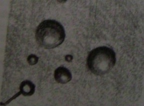

Okulun tatil olduğu, sorumluluklarınızın olmadığı ve güneşin doğuşundan batışına kadar zamandan başka bir şeyinizin olmadığı o uzun yaz günlerini hâlâ hatırlayabiliyor musunuz? Oynamak ve macera için zaman, gezinmek ve hayal kurmak için zaman. Çocukça eğlencelere harcanan saatler... Uçurtma uçurmak...
Bulutlan seyretmek... Balonlar yapmak...
Yeniden bir çocuk olduğunuzu ve böyle bir yaz gününe döndüğünüzü ve çayırda köpükten baloncuklar yaptığınızı hayal edin. Aşağıdakilerden hangisi hayalinize en fazla uyan tanımdır?
1. Üflediğiniz balonlar gökyüzüne doğru yükseliyor.
2. Plastik bir halkadan yüzlerce baloncuk üflüyorsunuz.
3. Kocaman tek bir balon üflemeye odaklandınız.
4. Üflediğiniz balonları rüzgâr arkanıza taşıyor.
